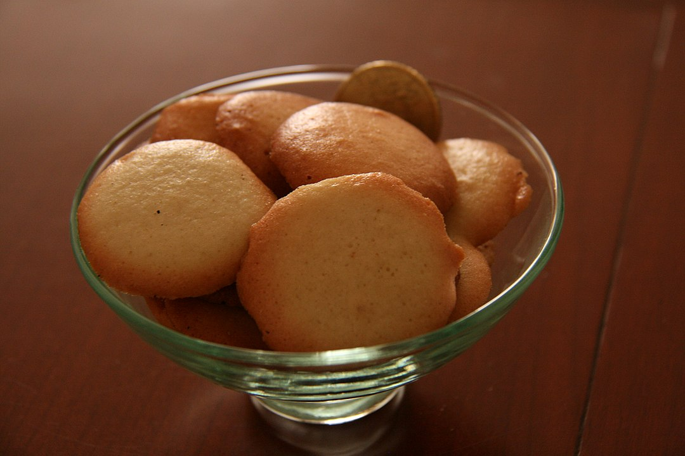

| Autor: Alejandro Rivera Casaseca Fecha:20/01/2021 |
Soria |
||||||||
| Inicio |
|
||||||||
| Burgos | |||||||||
| León | |||||||||
| Palencia | |||||||||
| Salamanca | |||||||||
| Segovia | |||||||||
| Ávila | |||||||||
| Valladolid | |||||||||
| Zamora | |||||||||
| Pagina de contacto | |||||||||
LocalizaciónLocalidadesGrandes ciudades : Soria, Almazán, El Burgo de Osma, Ólvega, San Esteban de Gormaz, Ágreda, Golmayo, San Leonardo de Yagüe, Covaleda, Arcos de Jalón, Duruelo de la Sierra, Berlanga de Duero, Vinuesa, Navaleno, Garray, Medinaceli, Langa de Duero, San Pedro Manrique, Almarza, Quintana Redonda, Los Rábanos, Tardelcuende, Cabrejas del Pinar, Gómara, Cidones, Abejar, Matamala de Almazán, Santa María de Huerta, El Royo, Borobia, Almenar de Soria, Deza, Morón de Almazán, Valdeavellano de Tera, Sotillo del Rincón, Almajano, Monteagudo de las Vicarías, Cubo de la Solana, Fuentearmegil y Alconaba. Mas informaciónGeografíaSoria cuenta con 10.306 Kms. cuadrados de inigualable belleza paisajística. La provincia presenta una geografía muy irregular que se traduce en un heterogéneo paisaje que incluye desde la alta montaña hasta los valles más profundos, pasando por los característicos pastizales de verano. Volver al principioHistoriaAunque existen indicios de asentamientos de la edad del hierro y celtibéricos, Soria entra en la historia propiamente con su repoblación entre el 1109 y el 1114, por el rey aragonés Alfonso I el Batallador. Enclave estratégico debido a las luchas por el territorio entre los reinos de Castilla, Navarra y Aragón, Soria pasó a formar parte de Castilla definitivamente en 1134, durante el reinado de Alfonso VII. En Soria nació Alfonso VIII, y tenía establecida su corte Alfonso X cuando recibió la oferta al trono del Sacro Imperio Romano-Germánico. En Soria murió el depuesto rey Jaime IV de Mallorca, y se casó en primeras nupcias Juan I de Castilla. Pujante durante la Baja Edad Media gracias a su situación fronteriza y su extensa cabaña ovina, Soria entró luego en una lenta decadencia durante los siguientes siglos. Sufrió daños en la Guerra de Sucesión y, más graves, durante la Guerra de la Independencia. La ciudad conserva un importante patrimonio arquitectónico (extensa muralla medieval, palacios renacentistas e iglesias románicas) y es sede del Museo Numantino (con piezas de la cercana ciudad celtíbera de Numancia). Volver al principioCulturaEn Soria hay muchas actividades culturales para hacer, como visitar monumentos, iglesias, sus numerosos municipios, mencionados antes, etc. En el siguiente enlace, podrá encontrar todas las actividades culturales que podrá realizar en su visita a Soria. Actividades culturales de Soria Volver al principio NaturalezaEstos son los 10 mejores parajes naturales de la provincia de Soria: Laguna Negra, Parque Natural Cañón del Río Lobos, Monumento Natural de la Fuentona, Mirador de la Galiana, Soto Playa, Monte Valonsadero, Sabinar de Calatañazor, Valle del Duero, Acebal de Garagueta, Cuevas de San Bartolomé Si desea conocer más sobre estos parajes, o sobre otros que no se han mencionado, puede acceder a ellos a través de estos enlaces: Volver al principioTradicionesAlgunas de las fiestas de Soria son las Fiestas de San Juan, la Semana Santa, el San Saturio, los Carnavales, El traje Tradicional: Los piñorros, La dulzaina y el tamboril Este es un vídeo de una de las fiestas de Soria: Volver al principio OtrosGastronomíaAlgunos platos típicos de Soria son: Patas de cordero asado, lomo embuchado, chanfaina. perdices en escabeche y las paciencias de Almazán La siguiente imagen es un ejemplo de gastronomía de la provincia de Soria, son las Paciencias de Almazán Volver al principio |